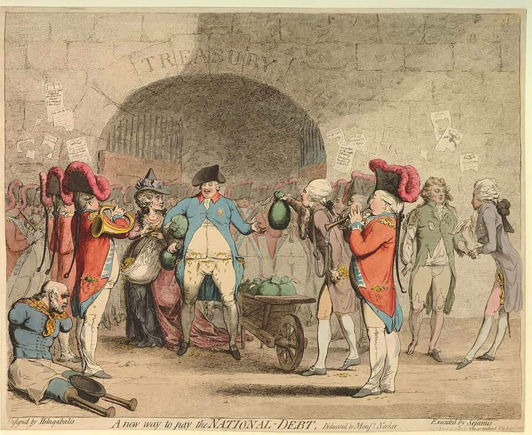
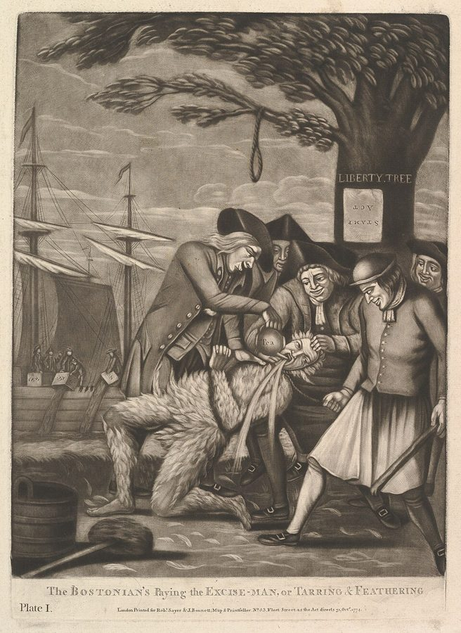

这一页在做什么
全书最后一章。斯密问：欧洲的大国为什么个个背着巨债？他的回答从卷三接过来：有了奢侈品，君主和贵族一样不再攒钱，一打仗只能借；商业社会又偏偏有钱可借、乐意出借，政府从此「免了自己节俭的义务」。读的时候抓两条线：借债怎样让打仗变得几乎无痛；斯密为什么认为国债的结局总是破产，而英国后来偏偏成了反例。全书在美洲殖民地的问题上收尾。

他想证明什么
第 1 段斯密自己说，接的是卷三：没有奢侈品的时代，富人的余财只能养人或窖藏，君主也攒得下财宝；商业来了，君主和领主一样把钱花在排场上（页 15 的家臣和依附是同一个机制），平时收支相抵，战时只能借。中间一长段（第 10–36 段）是英国借债技术的演变史，从短期抵押到永久付息、偿债基金、年金。然后他摆出要证明的事：借债让人民感受不到战争的代价；偿债基金总被挪用，英国的债每打一仗就翻一截，和平时几乎不降；公债不是新增的资本；债积到一定程度，结局总是破产。最后他开了两张药方：把英国的税制推广到爱尔兰和美洲，前提是合并、让它们在议会里有代表；做不到，就放弃殖民地。
读法：只有最后一段（§8）是先读，七百多词，全书的结尾。有空再读 §3 的「读报纸打仗」、§4 和 §5 两个论点，§1 的开头接卷三。§2 的借债技术和 §6 的征税方案可以跳过。
§4 说借给政府的钱从「养活生产性劳动」挪去「养活非生产性劳动」，用的是页 12 那条今天已经不用的划分。他的结论（政府借钱会挤掉私人的资本）可以单独评，见「今天怎么看」。
斯密落在哪：借债让政府和人民都轻松地打仗，偿债基金挡不住债越滚越大；他相信债积到一定程度，几乎没有被公正地彻底还清过的。英国要么让殖民地分担，要么放弃这个代价高昂的帝国梦，按自己实际有限的国力打算。
分节地图
这一页是卷五第 3 章，也是全书最后一章，本站切成 8 节。粗体是本站起的节名；「杨译里找」后面是杨译里这一节开头附近的小标题或第一句；灰色的英文是原文这一节开头的几个词。标「先读」的是最短读法。
- 君主为什么不再攒钱当不知有昂贵奢侈品的时候，有大收入的人可能将节省的钱贮藏起来IN that rude state of society …接卷三的奢侈品和领主。第 3 段说 1610 年以后欧洲大君主里据说只有两代普鲁士国王攒了钱；第 7 段解释商人为什么抢着借钱给政府。
- 预支、基金和终身年金各国借款开始是没有特别保证的，以后抵押特种资源The progress of the enormous debts …英国借债技术的细账，一年一年的抵押和基金。只看第 12 段两种借法的定义、第 33 段的唐提和第 36 段法国单身的包税人，其余可以跳过。
- 读着报纸打仗永久付息的制度防止了人民清楚地感觉到战争的负担The ordinary expence of the greater part …第 37 段读报纸看战功，是全章最好看的一段；第 40 段讲偿债基金为什么总被挪用；后面几段是每场战争的国债账，本站画成了图。
- 公债不是新增的资本认为国债是一种额外资本的意见是完全错误的The public funds of the different …驳「国债是新增资本」和「右手付左手」。第 51 段说战费要是当年征税，战争会更短更少，这一段今天还常被引用。
- 国债的结局总是破产土地和资本这两个原始收入来源是由地主和资本所有人管理的Land and capital stock are the …第 59 段他先承认英国眼下担得起，再警告别大意；第 60 段下断语；第 62 段罗马把铜币减到六分之一来还债，讲得很生动。
- 向爱尔兰和美洲征税要还清或减少不列颠的国债，必须收入有巨大的增加或支出有巨大的减少That the public revenue of Great Britain …斯密给帝国设计的税制和一笔每年多收六百多万镑的估算，前提是合并。他自称「新乌托邦」，可以跳过；第 84 段烟草当钱用的细节有趣。
- 合并爱尔兰和美洲爱尔兰和美洲对不列颠债务清偿作贡献是公道的It is not contrary to justice …写在独立战争打响之后。第 90 段说合并能让爱尔兰摆脱宗教偏见撑起的贵族；第 91 段预言英美分离后派系会恶毒十倍，后来怎样见「故事和背景」。
- 醒来吧，帝国只是一个梦如果不能使收入增加，大不列颠就应通过摆脱平时和战时维持殖民地的费用来减少支出If it should be found impracticable …全书最后一段。从开头的「如果」读起：增收做不到，才轮到放弃殖民地。最后一句是全书的落点。
先用中文过一遍：这一页的概念
这一页用到的两个概念。讲的是概念本身；每块的「今天」说今天怎么看它。页 12 的生产性和非生产性劳动、页 20 的殖民地贸易垄断在这一页还会用到。
§2永久公债 perpetual funding
政府借钱，拿某项税收给债主作抵押，有两种押法。押几年，期内连本带利还清，叫「预支」（anticipation）。只保证永远付利息，本金什么时候还由政府决定，叫「永久付息」，简称 funding，译本：「付息筹款法」。对债主，这像一份可以一直领下去的年金，想拿回本金，就到市场上把债券卖给别人；对政府，同一笔税能借到的钱多得多，代价是这笔税得一直收下去。第 26 段斯密说，各国起初都打算预支，可总是一笔没还完又押第二次，只好改成永久付息，把还债留给子孙。
今天：英国 1751 年起发行的「统一公债」（consols）就是这种债，1752 年首相 Pelham 把多种旧债并了进去；直到 2015 年 7 月英国才赎回最后一批。今天的国债多有到期日，可到期了借新还旧，总额很少真的还清。
在这一页：第 12 段下定义，第 26 段讲它怎样取代预支，第 37 段讲它让人民几乎感觉不到战争。
§2偿债基金 sinking fund
每年专门拿出一笔钱来还旧债的本金。英国的偿债基金来自降息：安妮女王时市场利率从六厘降到五厘，政府让债主接受较低的利息，原来为付息开征的税就有了余钱（第 27 段）。照理这笔钱年年还债，还掉的债不再付息，省下的利息又并进基金，越还越快。斯密说毛病出在人身上：和平时期一有额外开支，挪用偿债基金比开新税省事，暂停还债老百姓不会马上觉得痛（第 40 段）；它还方便借新债，因为随时可以拿去作抵押（第 28 段）。
今天：《国富论》出版十年后，Pitt 1786 年重设偿债基金，每年拨一百万镑。Robert Hamilton 1813 年的书被认为最早揭出这套办法在经济上的谬误。还债靠的终究是收入大于支出，基金本身变不出钱来。
在这一页：第 27–28 段讲来历，第 38–40 段讲它为什么总被挪用，第 47 段算它在和平时期还了多少。
故事和背景
这一页里的故事和 18 世纪的东西，按在书里出现的顺序排。
§1只有普鲁士国王攒下了钱
第 1 段说，封建时代的大地主没有奢侈品可买，只能养人，也常把钱窖藏起来：那时乱，钱要随时能带走，还得藏好，所以无主的「埋藏物」多到算国王的一项重要收入；斯密说如今全国的埋藏物加起来，也许还不够一位乡绅的一项像样进项。商业来了，君主和领主一样爱上了宫廷的排场。第 3 段斯密说，自 1610 年法国亨利四世死后，欧洲大君主里据说只有现任和前任两位普鲁士国王攒下了可观的财宝；共和国里只有伯尔尼。前任是「士兵国王」腓特烈·威廉一世，1740 年去世时给儿子腓特烈二世留下八百多万塔勒的战争储备和一支八万多人的军队。第 7 段补上另一半：在商业国家，借钱给政府不但不伤商人的生意，债券在市场上还常卖得比原价高，所以能认购新债被商人当成一种恩惠。
§2唐提和法国单身的包税人
第 33 段讲一种带赌博味的借法：一群人一起买终身年金，谁死了，他那份分给活着的人，最后一个活着的人独得全部。法语叫 Tontine，斯密说是照发明人的名字起的，译本：「顿廷法」。发明人是意大利银行家 Lorenzo de Tonti，1653 年向法国首相马萨林提出；英国政府 1693 年也办过一次。斯密说人人相信自己运气好，这种年金常卖得比它实际值的还贵，和彩票一个道理。第 36 段解释法国的债为什么多是终身年金：英国借钱给政府的多是商人，要留着本钱做生意；法国的债主多是包税人、收税官和宫廷银行家，出身低、钱多、脾气傲，不屑娶门当户对的女人，贵族小姐又不屑嫁他们，干脆独身，只求自己这辈子过得阔。拿本钱换一份只到自己死为止的年金，正合他们的心意。
§3一场战争，一大截国债
第 41–47 段是一本账：每打一仗，国债猛涨一截；和平十几年，只还掉一小块。最刺眼的是七年战争：首相帕勒姆（Pelham）在和平的七年里没能还掉 600 万镑旧债，一场差不多长的战争却新欠了 7500 多万。第 47 段写到 1775 年初，斯密说，英国又卷进了一场新战争；第三版加注：这场战争又添了一亿多镑。
§7「比从前恶毒十倍」：斯密对美洲的预言

第 89–91 段写在独立战争打响之后，斯密还在为合并说话：英国的债大半是为保卫美洲欠的，美洲分担是公道的。第 91 段他预言：要是彻底分离（他说这「似乎很可能」发生），小民主政体里免不了的派系斗争会比从前恶毒十倍；从前母国的强制力把它们约束在「粗暴和侮辱」以内，这股力量一撤，「大概」很快就会动武流血。后来呢？战争期间，爱国派和效忠派确实斗得很凶，约六万效忠派离开了美国。可建国以后，派系斗争多半在报纸、议会和选举里打，1787 年制宪，1800 年政权在两派之间和平交接。真正的大流血是 1861 年的内战，离独立已经七十八年，起因是奴隶制。斯密还说，大国里远离首都的省份党派心反而淡；麦迪逊在《联邦党人文集》第 10 篇论证大共和国比小共和国更能压住派系，是相近的思路，结论却是美国自己做大国。
原典：斯密的原话
这本书是公版书，下面整段放斯密的原文，配本站的白话译。灰字说它在杨译的哪里，最后一行是这段里今天容易读错的 18 世纪词。
§3读着报纸打仗
第 37 段的后大半，今天读来一点不旧。在杨译永久付息的制度防止了人民清楚地感觉到战争的负担这个小标题下面那一段。
The facility of borrowing delivers them from the embarrassment which this fear and inability would otherwise occasion. By means of borrowing they are enabled, with a very moderate increase of taxes, to raise, from year to year, money sufficient for carrying on the war, and by the practice of perpetual funding they are enabled, with the smallest possible increase of taxes, to raise annually the largest possible sum of money. In great empires the people who live in the capital, and in the provinces remote from the scene of action, feel, many of them, scarce any inconveniency from the war; but enjoy, at their ease, the amusement of reading in the newspapers the exploits of their own fleets and armies. To them this amusement compensates the small difference between the taxes which they pay on account of the war, and those which they had been accustomed to pay in time of peace. They are commonly dissatisfied with the return of peace, which puts an end to their amusement, and to a thousand visionary hopes of conquest and national glory, from a longer continuance of the war.
本站译：借钱容易，就替政府解了围：不然，它既怕人民不满，又不知道该加什么税，左右为难。靠借债，它只要稍稍加点税，就能年复一年筹到够打仗的钱；靠永久付息，它加的税尽可能少，每年筹到的钱却尽可能多。在大帝国里，住在首都和远离战场的省份的人，很多几乎感觉不到战争有什么不便，倒可以悠闲自在地享受一种消遣：在报纸上读自己的舰队和军队立了什么战功。对他们来说，这份消遣抵得过战时比平时多交的那一点点税。和平一来，他们通常还不高兴：消遣没了，盼着仗多打一阵就能征服别国、为国争光的无数空想也没了。
第 51 段是它的另一面：要是战费都靠当年征税，人民觉出全部分量，很快就会厌战，「战争一般会结束得更快，开打得也不那么轻率」。今天的实验证据见「今天怎么看」第一条。
- embarrassment窘境、为难，不是「尴尬」
- funding永久付息的借法，见概念块
- amusement消遣、娱乐
- visionary空想的、虚幻的，不是「有远见的」
§5公开的破产，变相的破产
第 60 段全文，接第 61 段的开头和末尾斯密的判词。在杨译破产总是巨大债务积累的结局下面那两段。
When national debts have once been accumulated to a certain degree, there is scarce, I believe, a single instance of their having been fairly and completely paid. The liberation of the public revenue, if it has ever been brought about at all, has always been brought about by a bankruptcy; sometimes by an avowed one, but always by a real one, though frequently by a pretended payment. The raising of the denomination of the coin has been the most usual expedient by which a real public bankruptcy has been disguised under the appearance of a pretended payment. … It occasions a general and most pernicious subversion of the fortunes of private people; enriching in most cases the idle and profuse debtor at the expence of the industrious and frugal creditor, and transporting a great part of the national capital from the hands which were likely to increase and improve it, to those which are likely to dissipate and destroy it.
本站译：国债一旦积到一定程度，我相信，几乎找不到一个被公正地、彻底地还清的例子。公共收入要是真摆脱过债务，那也总是靠破产摆脱的：有时是公开承认的破产，但总是实际的破产，虽然常常装成是还了钱。提高铸币的面额，是把实际的国家破产装扮成还钱的最常用的手段。……它让私人的家产来一场普遍的、为害极大的颠覆：多半是让懒散挥霍的欠债人发财，让勤勉节俭的债主吃亏，把一国资本的一大块，从可能让它增值、改良的人手里，转到可能把它挥霍掉、毁掉的人手里。
留意 I believe 和 scarce：斯密说的是「几乎找不到」。第 62 段的例子是罗马把一个阿斯铜币从十二盎司减到二盎司，用六分之一的钱还清了债；Cannan 注明，今天的史家认为事情没这么简单。今天的通胀减债见页 02 的「今天怎么看」。
- liberation of the public revenue公共收入的解放：债还清了，税收不再押给债主
- raising the denomination提高面额：同样分量的金属叫更大的面值
- avowed公开承认的
- profuse挥霍的，不是「大量的」
§8不是帝国，是一个帝国的计划
全书最后一段的后半，先读。段首是个条件：要是从爱尔兰和美洲都增加不了多少收入，英国就只剩减少开支一条路。在杨译如果不能使收入增加，大不列颠就应通过摆脱平时和战时维持殖民地的费用来减少支出下面。
The rulers of Great Britain have, for more than a century past, amused the people with the imagination that they possessed a great empire on the west side of the Atlantic. This empire, however, has hitherto existed in imagination only. It has hitherto been, not an empire, but the project of an empire; not a gold mine, but the project of a gold mine; a project which has cost, which continues to cost, and which, if pursued in the same way as it has been hitherto, is likely to cost, immense expence, without being likely to bring any profit; … It is surely now time that our rulers should either realize this golden dream, in which they have been indulging themselves, perhaps, as well as the people; or, that they should awake from it themselves, and endeavour to awaken the people. If the project cannot be completed, it ought to be given up. If any of the provinces of the British empire cannot be made to contribute towards the support of the whole empire, it is surely time that Great Britain should free herself from the expence of defending those provinces in time of war, … and endeavour to accommodate her future views and designs to the real mediocrity of her circumstances.
本站译：一百多年来，大不列颠的统治者一直拿一个想象逗人民开心：我们在大西洋西岸有一个大帝国。可是这个帝国至今只存在于想象之中。它至今不是一个帝国，而是一个帝国的计划；不是一座金矿，而是一座金矿的计划。这个计划已经花了、还在花，而且要是照老样子做下去，看来还要花巨大的开销，却不大可能带来任何利润。……现在的确是时候了：我们的统治者要么把这个金色的梦变成现实，这个梦他们自己也许和人民一样沉溺已久；要么自己从梦中醒来，并设法把人民唤醒。计划完成不了，就该放弃。帝国里哪个行省不能为支撑整个帝国出一份力，大不列颠就确实该卸下战时保卫这些行省的开销……，让今后的眼光和打算，合乎自己实际上有限的家底。
两个「如果」别丢：斯密没说殖民地非放弃不可，他说的是殖民地要么出钱出兵、成为真正的行省，要么英国别再替它们付账。略去的两处：一句说殖民地贸易垄断给人民大众带来的只有亏损，见页 20；一处是「平时供养它们的文武建制」。
- project计划、方案，常带「不切实际」的意味，参见 projector（搞新计划的人）
- provinces行省，帝国真正的组成部分
- mediocrity中等、有限，不是「平庸」
- circumstances家境、处境，这里指国力和财力
译本勘误
杨译这一章整体可靠。下面只收会把人读歪的一处。灰字是英文原文那一处的几个词；方框里是杨译的原句，在电子书里搜它。
§3是 1775 年以前的十一年数字
paid off during eleven years profound peace
译本：「1775年1月开始的11年和平时期」
这是杨译这一段前的小标题。原文说的是到 1775 年 1 月为止的十一年和平（七年战争结束以后），一共只还了约 1040 万镑。小标题写成「开始的」，数字又作 1500 万，按它读会以为说的是 1775 年以后。正文的数字 10415474 镑是对的。
今天怎么看
这一章的主要说法和今天的判断。每条标签判的是那条论点，五种标签的意思：
- 成立今天的经济学和证据支持这句话。
- 部分成立大方向对，细节或适用范围要改。
- 过时说的是 18 世纪的世界，当时也许对，今天的制度和技术已经变了。
- 被推翻后来的经济学或证据说明它错了。
- 有争议经济学界至今没有定论，两边各有代表性的研究。
借债打仗，人民感觉不到战争的分量，战争就打得更久、更轻率
今天看，前一半有实验证据：政治学者 Flores-Macías 和 Kreps 2017 年在美国和英国做问卷实验，同一场战争，说明要靠加税来打时，支持的人明显少于说明靠借债来打。后一半「打得更久、更轻率」是推论，很难用历史数据单独证实。
§3 §4 第 37、51 段公债不是新增的资本：借给政府的钱，原本能雇生产性劳动，被拿去养了非生产性劳动
今天看，「生产性劳动」这条线过时了（见页 12），政府修路办学也算投资；可核心那句「政府借钱会挤占私人投资」，经济学叫挤出效应，在资源用足时大体成立；萧条时人和机器闲着，借钱花出去未必挤掉什么。斯密自己也承认，借债让战时的税轻些，私人还能接着积累（第 50 段）。
§4 第 48–50 段国债就算全欠本国人，也照样有害；「右手付左手」是重商主义的诡辩
斯密的理由在后面几段：为付利息加的税会压垮地主改良土地的能力、把资本赶到国外（第 55–57 段）。今天这仍是一桩公案。Lerner 1948 年说，内债是「欠我们自己的」，不会让整个国家变穷；Buchanan 1958 年反驳：负担会转到将来纳税的一代人身上。Barro 1974 年又从另一头说：要是人们预见到将来的税、提前存钱，借债和加税效果一样。
§4 第 53 段国债积到一定程度，几乎没有被公正地、彻底地还清过，结局总是公开或变相的破产
今天看，「彻底还清」那半句说得对，各国很少真还清国债；「总是破产」那半句，英国自己就是反例。证据见下面的对照卡。
§5 第 58–63 段书里的说法：国债积到一定程度，几乎没有被公正地、彻底地还清过，结局总是公开或变相的破产
- 书里
- 第 60 段，用了 I believe 和 scarce；第 61–66 段说最常见的变相破产是提高铸币面额。第 59 段他也承认，英国眼下「似乎轻松地」担着半个世纪前谁都不信它担得起的债，只是别以为它担得起任何债。
- 当时
- 热那亚、威尼斯、西班牙、法国、荷兰都被债拖弱了（第 58 段）。西班牙早在 16 世纪就深陷债务，腓力二世在位时违约过四次。
- 今天
- 英国是反例：拿破仑战争结束时，国债约为 GDP 的 1.8 倍到 2 倍多（看用哪套数据），此后没有赖账，也没再打那样的大仗，靠一百年的经济增长把比例慢慢降到 1913–14 年的 29%，也成了第一个工业化国家。英国下一次违约，是 1934 年停付一战时欠美国的战债。不过斯密那半句没全错：英国的债也没「彻底还清」，是被增长稀释的。
- 另一边
- Reinhart 和 Rogoff 2009 年的《这次不一样》整理了八百年的数据，发现主权违约和用通胀赖账一再发生，斯密说的变相破产正是这一类。两人 2010 年又提出国债超过 GDP 90% 后增长明显变慢；Herndon、Ash 和 Pollin 2013 年发现表格算错、漏了数据，改正后高债国家的平均增长约 2.2%，不是 −0.1%，债和增长的关联弱得多。核对于 2026-10。依据：英国预算责任办公室（OBR）三百年财政数据；维基百科「英国国债史」；Drelichman & Voth, Lending to the Borrower from Hell, 2014；Reinhart & Rogoff, This Time Is Different, 2009；Herndon, Ash & Pollin, PERI 工作论文, 2013。
全书最后一句话，英国听了吗
主流看法：斯密常被当作反帝国的先知：仗打完，十三个殖民地果然走了，英国也没有因此衰落，几十年后成了第一个工业化国家。帝国整体划不划算，经济史学者至今在争，见页 20 的对照卡。
斯密的看法：第 89–93 段，他的第一选择是合并：殖民地纳税、在议会里有代表，成为真正的行省；做不到，才是放弃。理由是一本账：七年战争「完全是为了殖民地」，花了九千多万镑。
本站的评论：斯密的建议英国只听了一半。北美是被打掉的，不是主动放下的；放下之后，英国并没有「按有限的家底打算」，19 世纪反而在印度和非洲建起了更大的帝国。可他那把尺子今天照样好用：一个国家花大钱维持的东西，要问它是行省还是装门面的仪仗，谁在出钱，谁在得利。全书从别针厂里的十个工人讲起，在一个国家的家底上收尾，中间一直在问同一件事：一国的财富，究竟是普通人每年能用上的东西，还是统治者的金色的梦。
本站的总体看法：§8 一定要读，七百多词，全书的结尾。§3 读报纸打仗、§5 斯密先承认后警告的那两段也值得看。他对国债的悲观在英国没有应验，增长比他想象的快得多；可「借债让人不觉得痛」「变相破产」这两条，今天的新闻里还天天见。
精彩回顾
隔几周回来时看这里。想不起来，点节号回到那一节。
一句话：借债让打仗变得无痛，债却越滚越大；帝国要么让殖民地分担，要么从金色的梦里醒来。
远离战场的人几乎不觉得战争的分量，在报纸上读战功当消遣，和平来了反倒不高兴。靠借债打仗，正好让人不觉得痛。
§3七年战争前后，英国有基金的国债从约 7200 万镑涨到约 1.23 亿；帕勒姆和平七年，连 600 万旧债都没还掉。
§3有人说国债利息是右手付左手，国家没变穷。斯密说这是重商主义的诡辩；今天的经济学家还在为这件事吵。
§4全书最后一段：大西洋西岸的帝国，不是帝国而是帝国的计划，不是金矿而是金矿的计划。要么让它出钱，要么醒来，按有限的家底打算。
§8